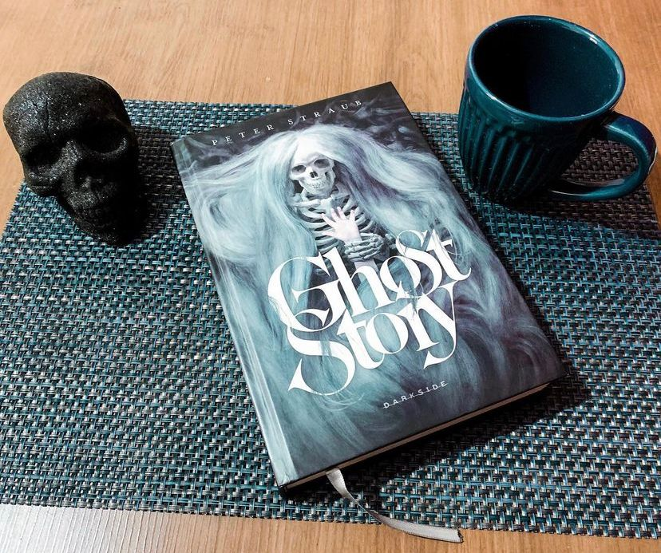

Ghost Story
(Peter Straub - DarksideBooks)
⭐⭐⭐⭐
Você gosta de histórias de terror ? Se sim, com toda certeza você vai gostar desta obra maravilhosa de Peter Straub escrita em 1979 recheada de histórias e enredos de congelar a espinha.
Na pacata cidadezinha de Milburn, nos Estados Unidos, a Sociedade Chowder ― formada por um grupo de quatro velhos amigos ― se reúne todo mês para contar histórias em encontros regados a bebidas e charutos. Algumas são verdadeiras, outras inventadas... mas todas elas têm algo em comum: são terrivelmente assustadoras. Um passatempo simples para conferir um pouco de diversão a suas vidas monótonas. Mas uma história chega para mostrar suas garras no presente e assombrá-los. Algo que eles fizeram muito tempo atrás. Um erro grotesco. Um acidente terrível. Agora, pesadelos fazem com que eles inevitavelmente sejam atraídos pelo sobrenatural. E não demora muito para que eles percebam que ninguém pode enterrar o passado para sempre…
Aqui a narrativa é misteriosa e no prólogo já percebemos como Peter vai construir todo enredo envolto de suspense e mistério. No começo nos é apresentado Don Wanderley e uma garota. O texto nos faz acreditar que ele sequestrou a menina, toda a estranheza da situação define o tom da ambientação de todo o texto, você se sente incomodado e a leitura é permeada a todo tempo de que algo ruim vai acontecer a qualquer momento. O ponto que une todas as ramificações da história é a sociedade Chowder e o autor consegue explorar o passado de cada um dos protagonistas, personagens primariamente ligados à eles e os eventos traumáticos que os levaram a serem assombrados por horríveis imagens à noite.
A sociedade é formada por quatro homens idosos que se revezam em suas casas em encontros mensais para compartilhar histórias reais de fantasmas. Quem sabe seja uma forma de exorcizarem seus fantasmas?